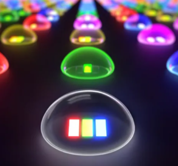
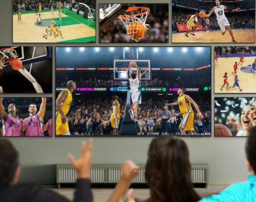

I saw Sony’s next-gen RGB mini-LED TV tech in action, and OLED TVs should be worried

Sony has announced a new “next-generation display system” based upon a “high density LED backlight” with individual control over the red, green and blue primary colors. The new display tech is being developed for both consumer TVs and professional displays, and will “begin mass production in 2025,” according to the company.
While Sony’s official announcement cites 2025 as the launch date for its new RGB LED tech, the company confirmed it as a “2026 technology” at a recent demonstration I attended at its Tokyo headquarters. That confirmation means we will more realistically see it arrive in new TVs next year, or possibly in 2027.
LCD TVs with RGB backlights aren’t exactly new – Sony developed RGB LED models as far back as 2004, and at the recent CES 2025, Samsung and TCL both had prototype mini-LED TVs with RGB backlights on display, while Hisense showed off a real RGB model it plans to release later this year.
|
Sonos reportedly cancels its streaming video player, but I hope it resurrects one part of it, because it could be huge
It's been known for some time that Sonos has been working on a streaming video device that was aimed to launch in 2025, with major leaks revealing what it would entail.
Now, after Sonos' previous CEO left as a result of the company's horrible 2024, Sonos has a new CEO that's changing a lot of things within the company – and according to The Verge, this has led to the cancellation of the streaming video box launch. The Verge has proven to have very accurate Sonos information over the years, so this is almost certainly correct.
Now, given that I called this box "doomed" based on the details we initially heard – specifically, that it would have ads-based software, yet would cost up to $400 – I can't say that I reacted with much surprise to seeing this news… but actually, I really hope this project isn't fully dead, because one half of it sounded amazing.
|
Samsung is offering you 8 new TVs in one bundle for March Madness, in case you want to watch all games at once like a Bond villain’s lair

When it comes to Samsung’s March Madness TV bundle, the term 'wall space' loses all meaning. Its crazy ‘Buzzer Beater Bundle’ deal packs eight ‘premium Samsung TVs’ ideal for curating the ultimate sport viewing set up - because one TV simply isn’t enough. Samsung’s bundle deal arrives just in time for the NNCA’s March Madness tournament starting on March 18, so it’s perfect if you take college basketball very seriously and have the budget to splurge, of course.
Samsung’s first-ever March Madness TV bundle is designed with dedicated sports fans in mind, ensuring that you can catch every single match, foul call, and dunk without having to compromise screen size and quality. As far as we know, the bundle is available in the US only for purchase between March 12 and March 22, and Samsung has gone into greater detail about its first-of-its-kind offer in a newsroom post, stating the following;
“Mega sports fans are often caught juggling split-screens or multiple devices to catch every moment of basketball action each March. Now, Samsung Electronics America is here to help with the first-ever Buzzer Beater Bundle. The limited-time TV offer delivers the ultimate home entertainment setup for college basketball fans – featuring eight premium Samsung TVs ranging from 55-to-98 inches of screen sizes in one package.”
|
|